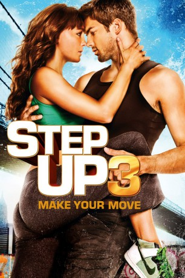

#1389 Step Up 3
 gesehen am 16.07.2015
gesehen am 16.07.2015
 
 IMDB-Wertung: 6.2 / 10
IMDB-Wertung: 6.2 / 10  Metascore: 45
Metascore: 45 
Streetdancer Luke lebt mit zahlreichen, jungen Tänzern verschiedenster Herkunft, die sich zu der Tanztruppe „House of Pirates“ zusammengeschlossen haben, in einem heruntergekommenen New Yorker Lagerhaus. Sie stehen kurz vor dem World Jam-Wettbewerb, einem Tanzwettstreit, bei dem die besten Tanzcrews der Welt gegeneinander antreten. Als Belohnung winkt eine hohe Gewinnsumme. Für die „Piraten“ eine große Herausforderung, denn sie müssen ihre Erzrivalen, das „House of Samurai“, besiegen. Damit die „Piraten“ die World Jam gewinnen können, brauchen sie talentierten Nachwuchs und so macht sich Luke in der Untergrund-Tanzszene der Stadt auf Suche nach neuen Talenten.
Jahr: 2010
Dauer: 107 Minuten
FSK: 6
Land: USA Studio: Walt Disney Studios Motion PicturesTonspuren:
Untertitel:
Auflösung: 720p (1280x720) Größe: 4474 MB
Genre: Drama, Musik, Liebe
Regisseur: Jon M. Chu
Drehbuch: Amy Andelson, Emily Meyer, Duane Adler
Soundtrack: Bear McCreary
Darsteller:
- Rick Malambri als Luke
 Adam G. Sevani als Moose
Adam G. Sevani als Moose- Sharni Vinson als Natalie
 Alyson Stoner als Camille
Alyson Stoner als Camille- Keith Stallworth als Jacob
- Kendra Andrews als Anala
 Stephen Boss als Jason
Stephen Boss als Jason- Martín Lombard als The Santiago Twins
- Facundo Lombard als The Santiago Twins
- Joe Slaughter als Julien
- Chadd Smith als Vladd
- Jonathan 'Legacy' Perez als Legz
 Ivan 'Flipz' Velez als Spinz
Ivan 'Flipz' Velez als Spinz Harry Shum Jr. als Cable
Harry Shum Jr. als Cable- Christopher Scott als Hair
 Luis Rosado als Monster
Luis Rosado als Monster- LaJon Dantzler als Smiles
- Joshua Allen als House of Samurai
- Beau Casper Smart als House of Samurai
- Joshua Lee Ayers als House of Samurai
- Carly Lang als House of Samurai
 Robin Lord Taylor als Punk Kid
Robin Lord Taylor als Punk Kid- Jimmy Smagula als Balloon Vendor
- Christopher Place als Police Officer
 Mark Blum als NYU Professor
Mark Blum als NYU Professor- Alex Charak als Silence D. Class
- Carolina Ravassa als Kristin
- Ally Maki als Jenny
 Jamal Sims als Red Hook Announcer
Jamal Sims als Red Hook Announcer- Mark Tallman als Door Person
 Jennifer Van Dyck als Natalie's Mom
Jennifer Van Dyck als Natalie's Mom- Kylie Goldstein als Ice Cream Girl
 David Brown als Ice Cream Man
David Brown als Ice Cream Man- Dylan Hartigan als Scooter BOy
- Sal Mistretta als Diner Customer
 Akira Takayama als Mr. Kido
Akira Takayama als Mr. Kido- Raymond Del Barrio als World Jam Judge
- Sawandi Wilson als Mover Dancer
- Marie 'Pandora' Medina als House of Red Hook
- Dave Scott als House of Red Hook
- Cheryl Alessio als Arcade Player
- George Alexander als World Jam Dancer
- Bryan Dechart als Anton
- Monique Dupree als Hip Hop Girl
- Jason Etter als Preppy Kid
- Ruby Feliciano als Mimi
 Kathy Najimy als Moose's Mom
Kathy Najimy als Moose's Mom- Danielle Polanco als Missy
 Uzimann als Hot Dog Vendor
Uzimann als Hot Dog Vendor- Tamisha Arrendell als Engineering Student , uncredited
Datei: X:\5-Pentalogie(A-Z)\Step Up\Step Up 3 (2010, FSK6, 1280x720).mkv seit 30.06.2015
Festplatte: HD Collection-3(N-Z)-6(A-Z)
 Es gibt insgesamt 9 Filme in der Gruppe '5-Pentalogie(A-Z)\Step Up'
Es gibt insgesamt 9 Filme in der Gruppe '5-Pentalogie(A-Z)\Step Up'